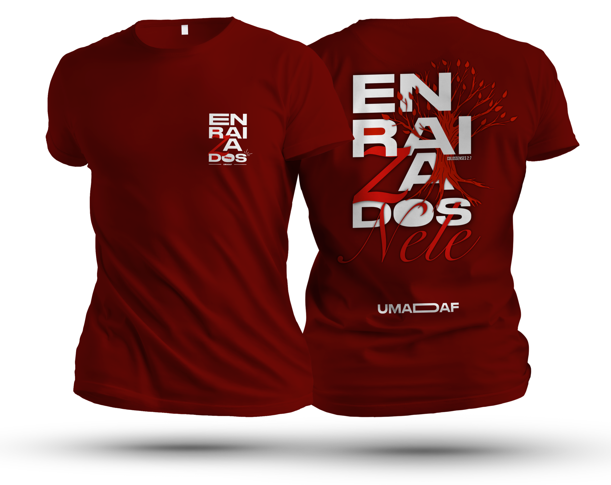

ESTAR ENRAIZADOS
É ter raízes firmes em Cristo, mesmo em meio às tempestades.
NOSSA CAMISA

Esta é a arte da nossa camisa, expressão da nossa fé e da transformação que Ele realiza em nós.
Contagem regressiva
Rumo ao culto — 20/12/2025
00
Dias
00
Horas
00
Min
00
Seg
ORGANIZAÇÃO
União de Mocidade da Assembleia de Deus em Água Fria